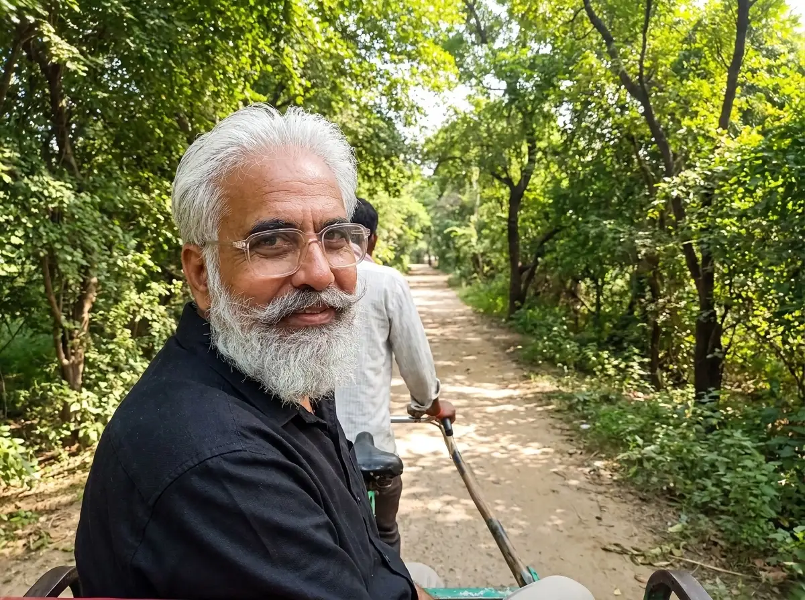

Distance: about 55 km via NH-21
Drive time: 1–1.5 hours each way
Best season: October to February
Inside the park: walk, cycle or cycle-rickshaw; no private cars
Time needed: 3–4 hours in the park; half a day in total
Fare: fixed fare confirmed on WhatsApp
After the crowds at the Taj Mahal, Bharatpur feels like a different country. Keoladeo National Park is a UNESCO World Heritage wetland where more than 350 bird species have been recorded. It is the shortest outstation trip we run from Agra, and one of the most peaceful.
Padma Shree Travels runs same-day Agra to Bharatpur trips in AC cabs. The driver waits at the park gate while you are inside. WhatsApp +91 87200 81102.
Bharatpur is about 55 km from Agra on NH-21, the Jaipur highway. The drive takes 1 to 1.5 hours on a good road. You cross from Uttar Pradesh into Rajasthan just before the town.
Private cars are not allowed inside. You buy your entry ticket at the gate and then choose how to go in:
Ticket and rickshaw rates are set by the park and change from time to time, so check the board at the gate. They are not part of the taxi fare.
October to February is the main season, when migratory birds arrive and the wetlands are full. Within the day, the first two hours after sunrise are the best. The birds are active, the light is soft, and the paths are quiet. By late morning it gets slower.
A fair warning: sightings depend on the season, the water level and luck. Come for a calm walk in a beautiful wetland and treat every bird as a bonus.
| Time | Plan |
|---|---|
| 6:00 AM | Pickup from your Agra hotel |
| 7:15–7:30 AM | Reach the park gate, buy tickets, hire a rickshaw |
| 7:30–11:00 AM | Inside the park |
| 11:00 AM | Tea or early lunch near the gate |
| 1:00 PM | Back in Agra, or continue to Fatehpur Sikri |
Fatehpur Sikri is on the same road, about 40 km from Agra, so the two fit easily in one day. Do the birds first in the cool morning and the monuments on the way back. If you are travelling on to Rajasthan, Bharatpur also works as a stop on the Agra to Jaipur drive.
Binoculars if you have them, a water bottle, and a warm layer in winter because the rickshaw ride is cold at 7:00 AM. Wear dull colours. Bright clothes make birds keep their distance.
Yes. The drive is short, the ground is flat, and a rickshaw means no one has to walk far. Children usually love it. Your luggage stays locked in the car, and the driver waits at the gate for as long as you are inside within the booked day.
Send your date, number of passengers and whether you want to add Fatehpur Sikri. We reply with one fixed fare in writing. Tolls, parking and park tickets are extra at actuals and we tell you about them before you book. See the Agra to Bharatpur taxi page for details.
Bharatpur's Keoladeo National Park is about 55 km from Agra via NH-21. The drive takes 1 to 1.5 hours by private taxi.
October to February is the main season, when migratory birds arrive. The first two hours after sunrise are the best time of day. Sightings depend on season, water level and luck, so no specific bird can be guaranteed.
No. Private cars are not allowed inside the park. Visitors go in on foot, on a hired bicycle, or in a cycle-rickshaw hired at the gate and charged by the hour. Your taxi waits at the parking area.
Plan 3 to 4 hours inside the park. With the drive from Agra and back, the whole trip takes about half a day. Leaving Agra at 6:00 AM brings you back by around 1:00 PM.
Yes. Both are on the same highway. Visit Bharatpur first in the early morning for the birds, then stop at Fatehpur Sikri on the way back to Agra. Tell us when booking so the fare covers the full route.
We do not publish a fixed starting price for this route. Message us on WhatsApp with your date and passengers and we confirm one fixed fare in writing. Tolls, parking and park entry tickets are extra at actuals.
Fixed fare in writing · Driver waits at the park · Driver details before pickup